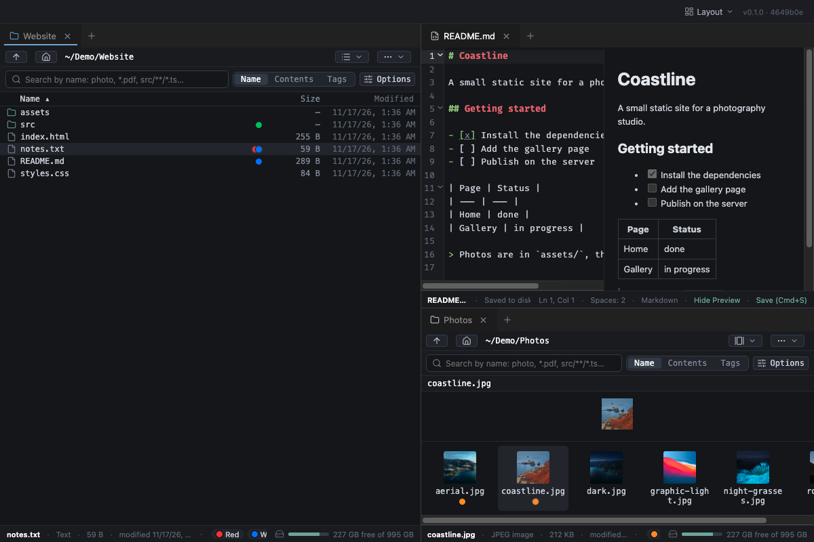
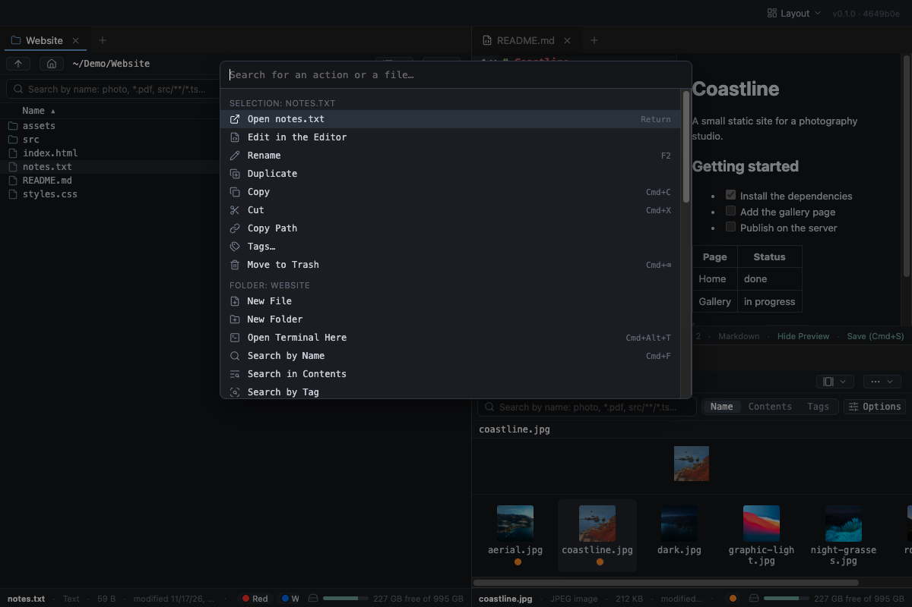
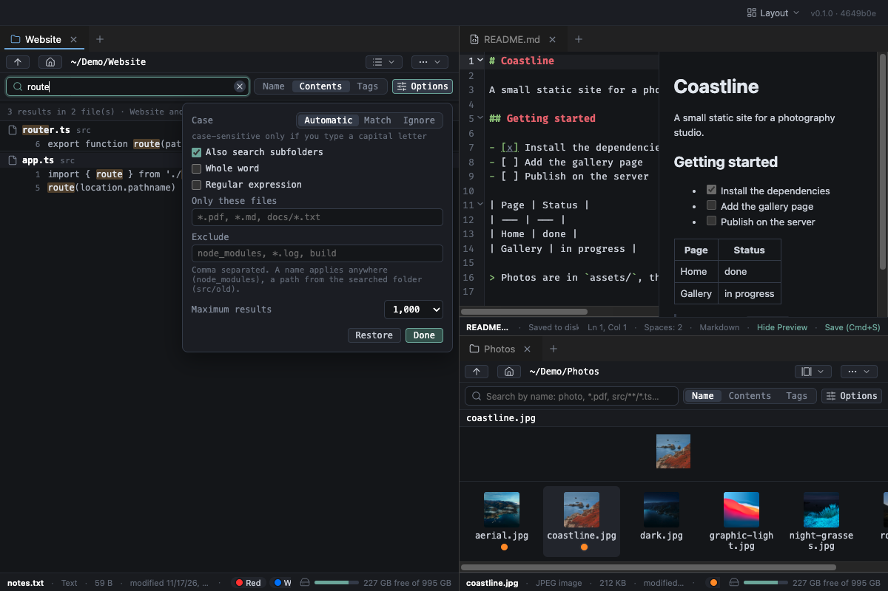

A file manager for macOS and Linux, for days spent working with files: tabs and side-by-side panels, a Raycast-style action bar, fast search, a code editor and a terminal, all in one place.
Still in development. Cassetto may contain bugs, and it moves, copies and deletes files, so keep backups of anything important. It is provided "as is", without warranty of any kind, and the author is not liable for any damage or data loss arising from its use. See the license.

The file manager that comes with your system is great for browsing. Cassetto is meant for the days when you work with files for hours: moving them between folders, creating new ones, searching inside them, changing a line in a config file, running a command where they live. It brings those steps together in one window, and works alongside the Finder or your Linux file manager rather than replacing them.
Cassetto (pronounced kahs-SET-toh) is Italian for drawer: the place where you put things away so you can find them again, each where it belongs. That is what the app is for: your files tidy and at hand, without hunting through windows to get to them.
Rename and colour tabs, drag one onto another to split the window, or pick a ready-made arrangement. Save layouts and bring them back later.
List, icons, columns and gallery with thumbnails. Create an empty file or folder right where you are. Preview with the space bar.
On macOS, the Finder’s own tags, stored the way the Finder stores them: they show in the Finder and in Spotlight and follow the file wherever it goes.
CodeMirror 6 with syntax highlighting, Sublime Text’s keys and a live Markdown preview beside the text.
Cmd+Alt+T opens your shell in a tab, in the folder you are looking at. On an SSH server, it opens on that server.
Cmd+K lists the hosts in your ~/.ssh/config. Remote folders work like local ones, with the same keys.
Ctrl+Space opens a bar of everything you can do right now: actions on the selection and the folder, the editor’s commands, arrangements, saved layouts. Type a few letters to find one, or a file name to open it.

Search by name (*.pdf, src/**/*.ts), by content or by tag. Results stream in as they are found, with options for case, whole word, regular expressions, includes and excludes. Inside a Git repository, ignored files are skipped.

Download the .dmg for your Mac (arm64 for Apple Silicon, x64 for Intel; macOS 13 Ventura or later) and drag Cassetto into Applications. The app is not yet signed with an Apple Developer ID, so the first time macOS refuses to open it. To allow it:
Or remove the quarantine flag from the Terminal:
xattr -dr com.apple.quarantine /Applications/Cassetto.app
After that it opens normally, and it updates itself.
Download the .AppImage (x64), make it executable and run it:
chmod +x Cassetto-*.AppImage ./Cassetto-*.AppImage
It updates itself like on macOS. Everything works the same except Finder tags, which are a macOS feature. Shortcuts follow Linux habits: Ctrl in place of Cmd, and Ctrl+Shift for the window-wide ones.
Cassetto runs on your computer and talks to nothing but the servers you open over SSH and, to check for updates, GitHub. Updates are verified against the SHA-256 GitHub publishes. The interface runs sandboxed with no browser permissions, and the packaged app locks down Electron so no other program can borrow it to run code of its own.